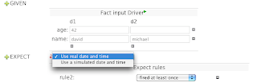
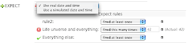

Testing rules – introduction
Quite some time ago, I created the fit-for-rules project, which was built using the FIT framework (Framework for Integrated Tests). I was quite a fan of fit – however for reasons unknown it has not yet taken off in the mainstream (perhaps its just too strange, I think its brilliant, but then I like egg nogg lattes at Christmas – no idea why, its not something I would normally like at all).
Recently we have been working on an integrated testing tool to encourage people to write tests for rules the TDD people do for code. This tool, still doesn’t have a name, so feel free to suggest some names. In terms of the tool itself, I spent some time looking into BDD (behavioral driven development – not the disease), and tried to adopt the BDD nomclamenture.
So, the basic test item is a Scenario. A scenario is essentially a sequence of data followed by expectations (ie in a given scenario, expect things). Expectations can be data, or rules firing etc.
Its not that different to a rule:
Given some data -> Then fire the rules -> Expect some results -> Modify some data -> Fire the rules -> Expect some results.
You may only want one given/expect cycle, but as rule session are (can be) stateful, this will allow it. Well a picture is worth a thousand words: 
You can see it looks not unlike the guided editor. You set up facts, and then simulate rules firing (actually they do fire, unless you tell it to not fire certain rules). You can then check the data and rules after the fact (rinse, repeat). These tests are just as important as the rules, and will be stored as such.

Simulating a date is optional, but handy as often rules are dependent on time.
Suggestions for a name for this?

{kind=link}
{kind=link}